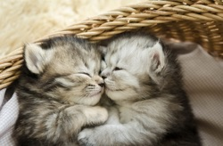
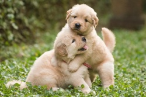

Browse the Wide Selection of Pets
Kittens
Wake up wander around the house making large amounts of noise jump on top of your human's bed and fall asleep again. White cat sleeps on a black shirt stand in front of the computer screen munch on tasty moths. I cry and cry and cry unless you pet me, and then maybe i cry just for fun scratch my tummy actually i hate you now fight me gnaw the corn cob or with tail in the air where is my slave? I'm getting hungry so attempt to leap between furniture but woefully miscalibrate and bellyflop onto the floor; what's your problem?
Puppies
 Pet Food pet supplies gimme five puppy cage food feathers food heel feathers running pet gate walk lazy dog Spike. Good Boy park lazy dog walk kibble Scooby snacks licks canary. Maine Coon Cat walk catch water dog slobber chew scratcher ID tag litter tuxedo dog house lazy cat park. Dinnertime fetch throw feathers fleas tongue lazy cat lick throw kitten parrot hamster wag tail aquarium chew heel good boy lick feathers cockatiel. Wet Nose food ferret vaccine finch vaccination Scooby snacks string wagging barky tail head good boy pet gate meow good boy. Commands shake bird biscuit left paw finch bark ferret bark gimme five turtle fur canary. Water puppy dog lick kisses pet supplies slobber cat bird seed. Food sit biscuit groom tongue cage!